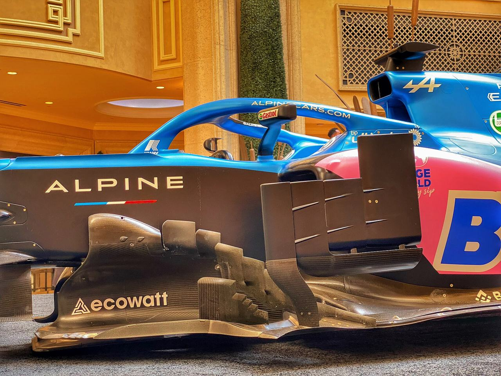
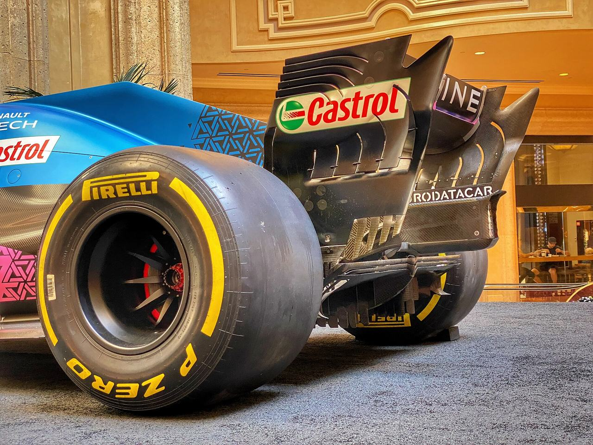
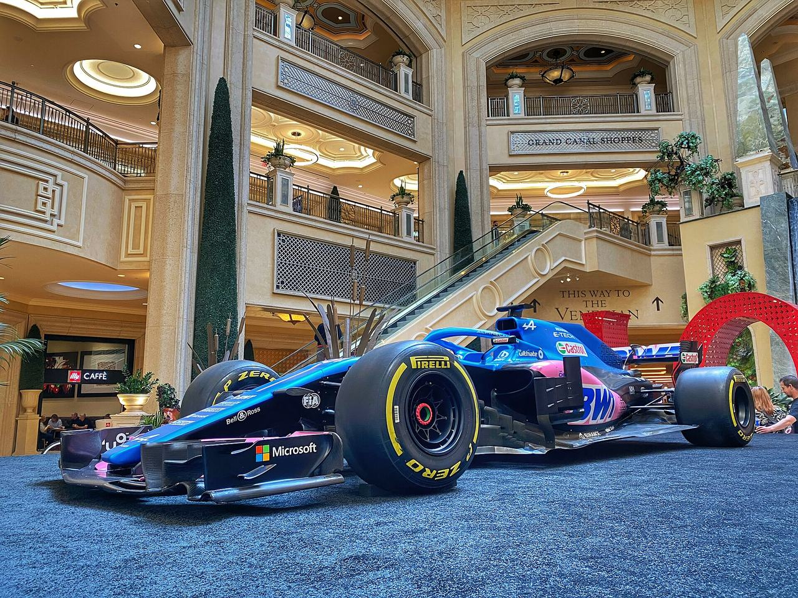
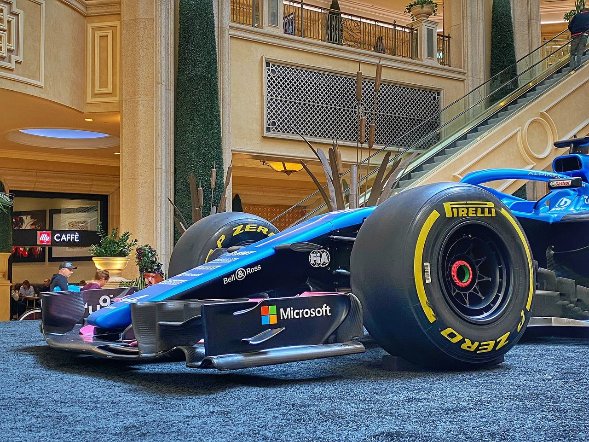
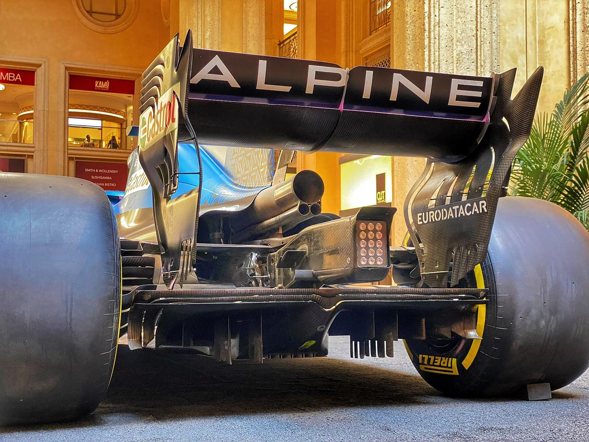

Pole, winner and podium for the next Grand Prix — committed to the record before the race runs, and scored against it afterwards.





This page exists to test the scroll treatment only. The real tabs, house picks and tables live on the main site — the point here is that the car never sits on top of any of it.